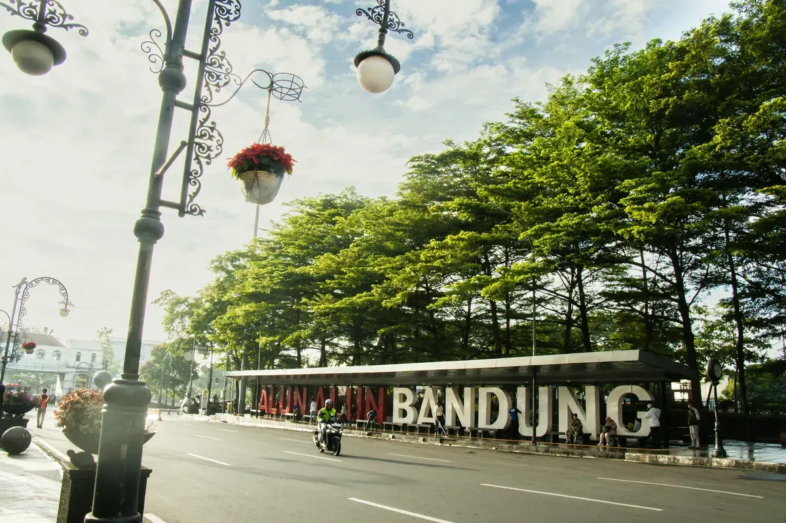

Bandung, my hometown
The city of cool air
Bandung is the capital of West Java Province and the fourth-largest city in Indonesia, famous for its cool mountain air, creative culture, and Dutch colonial architecture.
Sitting on a highland plateau at around 768 meters above sea level, the city stays cooler than most of Java. In the colonial era it was nicknamed "Paris van Java" because of its elegant buildings and cafés, and many of them still stand along Jalan Braga and Jalan Asia Afrika.

Why I love it
Creative
Bandung is known for its designers, musicians, and small fashion and craft brands, many started by young locals.
Historic
The Asia-Africa Conference was held here in 1955, and the city still keeps that story alive in its museums and streets.
Delicious
From savory street snacks to warm soups, food in Bandung is a good reason to come back.